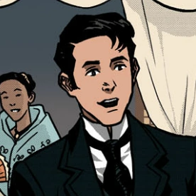

| Image of the Character |
Name of the Character |
Description of the Character |
|

|
Crisóstomo Ibarra |
His full name is Juan Crisóstomo Ibarra y Magsalin, a Filipino who spent 7 years studying in Europe. He is Maria Clara's love interest. Son of the deceased Don Rafael Ibarra. Crisostomo changed his last name from Eibarramendia to Ibarra, taken after his ancestor's last name. |

|
María Clara |
Her full name is María Clara de los Santos, Ibarra's lover. She is the illegitimate child of Father Dámaso and Pía Alba. |

|
Father Dámaso |
His full name is Dámaso Verdolagas. He is a Franciscan friar and the biological father of María Clara. |

|
Kapitan Tiago |
His real name is Don Santiago de los Santos. He is the known father of María Clara but not the true one. He is currently living in Binondo. |

|
Padre Sibyla |
His full name is Hernando de la Sibyla. He is a Filipino friar and described as small and being fair-skinned. |